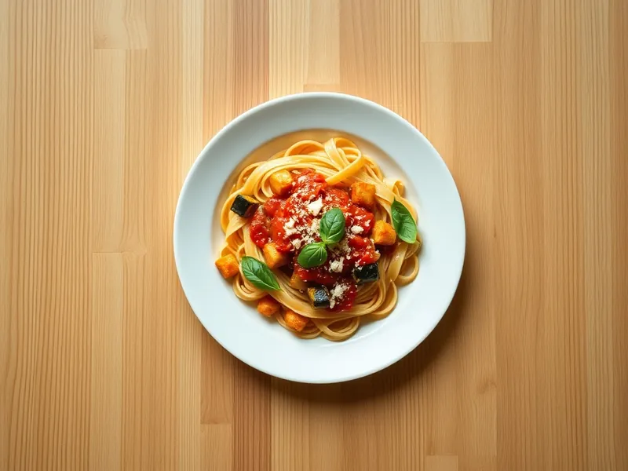

Паста алла норма с баклажанами
Сицилийская паста с жареными баклажанами в томатном соусе с базиликом
30 мин2 порц.681 ккал на порциюБ 20 · Ж 28 · У 86Итальянская кухня
Открыть в приложении: порции, таймеры, список покупок
Продукты на 2 порц.
- Макароны200 г
- Баклажан1 шт
- Томаты в собственном соку1 банка
- Чеснок2 зуб.
- Оливковое масло3 ст. л.
- Базилик по желаниюпо вкусу
- Пармезан30 г
- Соль2 ч. л.
- Вода2000 мл
Как готовить
- Баклажан нарежьте кубиками 2 см. Поставьте воду для пасты на сильный огонь.
- Разогрейте масло на сковороде на среднем огне и жарьте баклажан 8-10 минут, перемешивая, пока кубики не станут мягкими и золотистыми.
- Посолите воду и сварите пасту по инструкции на упаковке, обычно 8-10 минут.
- К баклажанам добавьте нарезанный чеснок на 1 минуту, затем томаты. Разомните их и тушите 8 минут до загустения, посолите.
- Откиньте пасту, смешайте с соусом и прогрейте 1 минуту. Подавайте с рваным базиликом и тёртым пармезаном.
Совет. Баклажан жадно впитывает масло, не подливайте его каждую минуту: через 3-4 минуты кубики сами отдадут масло обратно. В оригинале сверху натирают солёную рикотту, пармезан или брынза её заменят.